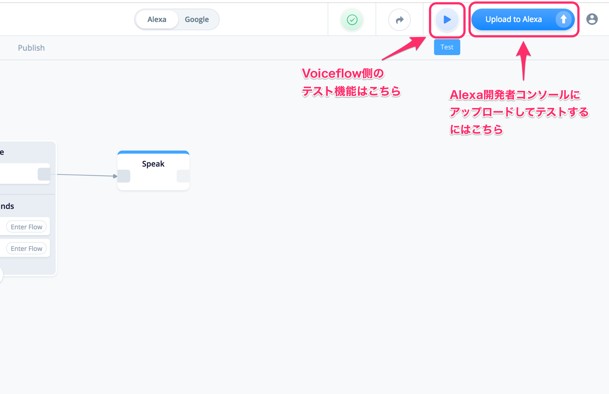

1-1. 概要
Voiceflowを使ったAlexaスキル開発のハンズオン資料です。
1-2. 想定するターゲット
- Alexaスキル開発に興味のある方
- プログラミングをやったことがない方、プログラミングに挫折した経験のある方
1-3. 注意
1-4. 必要なもの
以下を事前に準備しておいてください。
Amazon.co.jpアカウント
- amazon.co.jpでアカウント取得後、Alexa開発者コンソールで開発者登録を済ませておいてください。
- まだの方はこちらを参照してください。
https://dev.classmethod.jp/voice-assistant/how-to-safety-create-alexa-developers-account/ - なお、AWSアカウントは不要です
gmailアカウント
以下で使用します。事前に準備しておいてください。
- Voiceflowへのログイン
では始めましょう！
以下URLへアクセスします。
"Try for Free" をクリックします。
"Sign up with Google" をクリックします。gmailのログイン画面が出てきたらログインします。

Voiceflowをどこで使うか？を聞いてくるので、適当に選んでください。（職場、個人、教育）

プログラミング経験があるか？を聞いてくるので、適当に選んでください。（経験なし、少しだけ経験あり、経験豊富）

以下の画面が出てきたらログイン完了です！
3-1. 今回作成するスキルについて
このハンズオンでは以下のようなスキルを作成します。
ユーザ ：アレクサ、我が家の食卓を開いて
アレクサ：我が家の食卓へようこそ！このスキルでは我が家のおすすめのレシピをご紹介しますよ。
なんのレシピを聞きますか？
ユーザ ：肉じゃがのレシピを教えて
アレクサ：わかりました。では肉じゃがの４人分のレシピです。
じゃがいも、５００グラム、玉ねぎ、１個、牛肉細切れ、２００グラム、糸こんにゃく、１００グラム、
サラダ油、小さじ１、水３００ミリリットル、濃口醤油、大さじ４、みりん、大さじ４、酒、大さじ３、
砂糖、大さじ３、です。
他のレシピも聞きますか？
ユーザ ：いいえ
アレクサ：わかりました。今日のご飯が楽しみですね。また利用してくださいね。
3-2. スキルの作成（その１）
ではスキルを作成していきましょう！
"Create Skill" をクリックします。
スキルの基本情報を入力します。
"Enter your project name" にスキル名を入力します。スキル名がスキルの呼び出し名になります。今回は「我が家の食卓」と入力します。
国・言語は、日本語向けスキルなので、"Japanese（JP）"にチェックを入れて、"English（US）"のチェックを外します。
最後に"Continue"をクリックします。

テンプレートを選択する画面が出てきます。今回は左上の"Blank"を選択して、イチから作成します。

スキル開発用のキャンバス画面が表示されます。この画面が基本となります。
- 最初から用意してあるHomeの中にあるStartブロックがスタート地点になります。
- 左からブロックを選択して配置します。
- ブロックの中に発話などを設定します。
- ブロック同士を線でつなげます。
では早速やってみましょう！左のメニューから、"Speak"と書かれたブロックをドラッグアンドドロップして、Homeブロックの右側に置きます。
右側にSpeakブロックのメニューが出てきました。"Tell Alexa what to say..."と書かれたところに以下の文章を入力します。
我が家の食卓へようこそ！このスキルでは我が家のレシピをご紹介しますよ。
StartブロックとSpeakブロックを線でつなげます。Startブロックの右端の四角の部分からSpeakブロックの左端の四角の部分までドラッグしてつなげてください。
さらに、もう一つSpeakブロックを追加しましょう。場所は先ほど作成したSpeakブロックの右でよいです。中の文章は以下を入力します。
何のレシピを聞きたいですか？
そしてSpeakブロック同士をつなげます。こんな感じになります。
ではここで一旦保存しましょう。Voiceflowでは、保存は定期的に自動で行われますが、右上にフロッピーのアイコンが表示されている場合はまだ保存されていない状態なのでクリックして保存します。最新の状態で保存済みの場合は緑のチェックマークが表示されます。
ではテストしてみましょう。
Voiceflowは、標準でテスト機能を持っています（右上の矢印のアイコンがそれです）。ただし、以下のような問題があります。
- あくまでもVoiceflowの中でのテストになります。実際にAmazon Echoなどで使用する場合には、Alexa開発者コンソールにアップロードする必要があります。
- 日本語の入力がうまくできない場合があります。
ということで、テストはAlexa開発者コンソール側で行うこととします。
4-1. スキルのアップロード
Alexa開発者コンソールへのアップロードは右上の"Upload To Alexa"をクリックします。

はじめてアップロードする場合は、Alexa開発者コンソールとの連携ができていませんので、連携設定を行う必要があります。"Login with Amazon"をクリックします。
Amazonへのログイン画面が表示されますので、Amazon.co.jpのアカウントでログインします。

開発者コンソールへのアクセス権の確認が行われますので「許可」をクリックします。

この画面が表示されれば連携は完了です。"Continue"をクリックして、スキルをアップロードします。
アップロードの進捗が表示されます。
"Upload Successful"と表示されれば、アップロードは完了し、Alexa開発者コンソールでのテストが可能になります。"Test on Alexa Simulator"をクリックします。
Alexa開発者コンソールのテストシミュレータ表示されます。
4-2. スキルのテスト
ではテストしてみましょう。左の「日本語」と書かれた横の入力欄に「我が家の食卓をひらいて」と入力しENTERキーを押してください。
Voiceflowで設定した通りの文章が表示（発話）されましたでしょうか？
まだ、少ししか喋らせていないのでテストというほどのものでもないですが、Voiceflowでのスキル開発は、
- Voiceflowでスキルを作成
- Alexa開発者コンソールにアップロードしてテスト
という一連の流れの繰り返し、ということを理解してください。
では、引き続きスキルの作成を進めましょう。
先程の会話の最後では「なんのレシピを聞きたいですか？」ということで、ユーザに対して質問をしています。すなわちユーザからの発話を元に以後の会話が分岐していくことになります。いよいよプログラムらしい感じになってきましたね！
Voiceflowで、ユーザの発話を元に分岐を作るにはChoiceブロックを使うのが一番簡単なのですが、現状少し問題があり、
- 「はい」「いいえ」といった簡単な分岐にしか使えません。
- 予め決められた以外の言葉を話された場合に正しく分岐しない問題があります。
これらはそのうち治るかもしれませんが、現状、こういった「ユーザの発話」と「それに応じた分岐」を行うには、Interactionブロックを使う必要があります。Interactionブロックを使うには、Alexaの「VUIの仕組み」を少し知る必要があります。
5-1. VUIの仕組み
では、VUIの仕組みについて学んでいきましょう。VUIに必要な要素は以下の３つとなります。
- インテント
- サンプル発話
- スロット
それぞれ順に説明していきます。
5-2. インテント
最初に説明したスキルの応答例の中に、ユーザが「やりたいこと、してほしいこと」が書いてあります。それはなんでしょうか？
ユーザ ：肉じゃがのレシピを教えて
要は、特定の料理の「レシピの内容を教えてほしい」ということですよね。
こういった 「ユーザがやりたいこと」「ユーザが言いそうなこと」 をスマートスピーカー開発の世界では 「インテント（意図）」 といいます。簡単に行ってしまうと、これらのインテントの内容に応じて、適切な応答を返すように機能を作る、のがスマートスピーカースキルの開発ということになります。
今回の応答例では書いてませんが、例えば「レシピを教えて」と言う前に、そもそもレシピの種類は何があるんだろう？という疑問があってもおかしくありません。その場合には多分ユーザはこう言うでしょう。
ユーザ ：レシピの種類を教えて
両方ともレシピに関するインテントであるということは共通ですよね？でもユーザが言ってることは微妙に違いませんか？そして、それぞれに対して返ってくる答えも違いますよね？
インテント①
ユーザ ：肉じゃがのレシピを教えて
具体的な料理に対するレシピの内容が知りたい、これに対する答えは、
カレーライスのレシピは、じゃがいも、５００グラム、玉ねぎ、１個、・・・
インテント②
ユーザ ：レシピの種類を教えて
どういうレシピの種類があるか知りたい、これに対する答えは、
肉じゃが、カレーライス、カルボナーラがあります
このように、ユーザが聞きたい意図が違う、すなわち、返ってくる答えも違うということは、複数のインテントが存在するということを表しています。したがって、これらはそれぞれ別のインテントとして設計する必要があるということになります。Alexaに限らず、他のスマートスピーカー等でもこの考え方は共通なので、まずはこういうものだという風にご理解ください。
さらに、どんなスキルを開発するかに関係なく、共通のインテントというものも存在します。
アレクサ、終了して
アレクサ、スキルの使い方を教えて
レシピを教えてくれるスキルであっても、天気を教えてくれるスキルであっても、スマートスピーカーを操作する場合にはこういうことってありますよね？こういったスマートスピーカーそのものの機能に関するインテントを「標準インテント」といいます。これらはスキルの種類や内容に関係なく、スマートスピーカーを操作する上で必要な共通機能なので予め用意されており、応答内容だけは開発者が設定することになりますが、機能としての振る舞いは決められた形になります。
それに対して、最初に例としてあげた「レシピの種類をおしえて」や「〇〇〇のレシピを教えて」は、そのスキル固有の機能、すなわち、スキル固有のインテントになりますので 「カスタムインテント」といいます。これは開発者が自由に作成することができます。
まとめると、カスタムインテントは開発者がそのスキルの一機能としての振る舞い、応答内容も含めてイチから実装するもの、標準インテントは予め用意されたルールに従って応答だけ設定するもの、と覚えてください。
5-3. サンプル発話
再度、先程のカスタムインテントの例を見てみましょう
ユーザ ：肉じゃがのレシピを教えて
肉じゃがの部分は置いといて、このインテント、この通りにいいますか？あなたならどう言いますか？
「肉じゃがのレシピ、教えて」（微妙に違う）
「肉じゃがのレシピ！」（動詞がない）
「今夜は、肉じゃがにしよーかー」（独り言っぽい）
「肉じゃが！」（めんどくさい）
意図としてはすべて同じですが、言い方は様々ですよね？これらのユーザの発話の「パターン」を 「サンプル発話」といいます。音声認識の技術は格段に進歩しましたが、文脈の解析はまだまだ完璧ではありません。そこで、こういったユーザの言いそうなパターンを可能な限り網羅することで、より高い精度で多くのユーザの要求に答えることが可能となります。
また、これはカスタムインテントだけではなく、標準インテントでも同じです。標準インテントの場合には予めユーザのサンプル発話が内部的に用意されていますが、それでもすべてのユーザの発話パターンに対応できるわけではないため、より精度を高めたい場合にはサンプル発話を追加することも可能です。
5-4. スロット
もう一度、カスタムインテントを見てください。
ユーザ ：肉じゃがのレシピを教えて
何度も繰り返すようですが、肉じゃがのレシピを知りたいというインテントですね。じゃあこれが例えばカレーライスだったらどうでしょうか？カルボナーラだったらどうでしょうか？こういうのを一つ一つインテントとして用意していたらキリがないですよね？このようにインテントの目的は同じだけれども、その中に一部異なる部分が含まれる場合、すなわち 「可変」となる部分を 「スロット」といいます。スロットを使うことで、
- インテントを設計する際に、サンプル発話のパターンだけに集中できる。
- スロットを変数として取得してプログラムに渡すことができる。
ができるようになり、より柔軟なスキル開発ができるようになります。
5-5. VUIのまとめ
インテント、サンプル発話、スロットの関係を図にまとめるとこんな感じになります。
なんとなく雰囲気がわかったでしょうか？現時点では、まだよくわからない部分もあるかもしれませんが、それは実際のスキル開発の中で学んでいきましょう！
5-6. スキルの作成（STEP2）続き
ではインテントを作っていきましょう。左のメニューの"Advanced"をクリックすると、Interactionブロックというのが出てくるので、これを二つ目のSpeakブロックの右に配置して、線でつなぎます。
次に、Interactionブロックの中の設定を行います。
まず、スロットの設定です。Interactionブロックの中のSlotsタブをクリックして、Add Slotsをクリックし、以下を設定していきます。
- "slot_one" を "recipe_name" に変更します。（日本語は入力できません）
- "select slot type" は "Custom" を設定します。
- "Enter Slot Content Example"に 「肉じゃが」 と入力します。入力後は必ず最後にENTERキーを押してください。
- 続けて"Enter Slot Content Example"に「カレーライス」「カルボナーラ」も同様に入力します。
こういう感じになります。
次に、インテントの設定です。Interactionブロックの中のIntentsタブをクリックして、Add Intentsをクリックし、以下を設定していきます。
- "intent_one" を "recipe_intent" に変更します。（日本語は入力できません）
- "Enter user reply" に サンプル発話のパターンを順次入力します。スロットになる部分は "[スロット名]" と入力します。今回の場合は先程スロットで設定した "[recipe_name]"になります。
例として「肉じゃがのレシピを教えて」のサンプル発話を入力してみましょう。「肉じゃが」の部分がスロットになりますので、入力する内容は「[recipe_name]のレシピを教えて」になりますね？スロットを入力する場合は"["を入力すると自動的に候補が出てきます。

そのままENTERキーを押すとそれが入力され、スロットの場合はブルーで強調表示されます。
続けて「のレシピを教えて」を入力しますが、スロットの前後には必ず半角スペースが含まれる必要があるので注意してください。

入力し終わったら必ずENTERキーで確定させてください。
同様にして、以下を入力して下さい。
- [recipe_name] のレシピ、教えて
- [recipe_name] のレシピ
- [recipe_name]
こんな感じになります。
最後に、インテントごとの分岐の設定です。今回はインテントが一つだけですが、複数のインテントの場合はもちろん、スロットを使う場合には必ず設定が必要になります。Interactionブロックの中のChoicesタブをクリックして、Add Choiceをクリックします。
Interactionブロックに分岐が増えたのがわかるでしょうか？ここで Select Intent から先ほど作成した"recipe_intent" を選択することで、「xxxxxのレシピを教えて」と言われた場合はこの分岐に入るという紐付けができたことになります。
もう一つ、先程インテントの中で設定したスロット、これは後で分岐の条件として使います。Voiceflowでは、If変数による分岐ができるIfブロックというのがあります。スロット値を変数にしたい場合は、スロットと変数のマッピングが必要になります。
まず変数を作成しましょう。画面一番左の"</>"のアイコンをクリックします。
変数（Variable）の画面が表示されます。真ん中の入力欄に"recipe_name"を入力します。これが変数名になります。最後にENTERキーを忘れずに。

一番下に先程の変数が表示されればOKです。

では再度Interactionブロックに戻って、スロットと変数のマッピングを行います。Choicesタブの、先程作成したrecipe_intentの中にある"Add Variable Map"をクリックします。

スロットと変数をそれぞれ選択する項目が出てきます。
Slotに"recipe_name"、Variableに"recipe_name"をそれぞれ設定します。こんな感じになります。

これでInteractionブロックの設定は終わりです。たかだか分岐処理にこれだけの設定が必要なのか、と感じたかもしれませんが、慣れればそれほど時間もかからないようになりますので、ぜひ覚えてください。
これで、ユーザが発話したレシピ名を変数で処理できるようになりましたので、いよいよ、本当の分岐処理になります。
では、ここから分岐処理を行います。前の章でもお話したとおり、変数による分岐はIfブロックを使います。
左のメニューの"Logic"をクリックすると、Ifブロックが出てくるので、これをInteractionブロックの右において、1と書いてある四角とつなげます。

Ifブロックの中に条件を設定していきます。設定する条件は以下となります。
- 変数 recipe_name が "肉じゃが" だったら 1 へ
- 変数 recipe_name が "カレーライス" だったら 2 へ
- 変数 recipe_name が "カルボナーラ" だったら 3 へ
- 変数 recipe_name が 上記以外 だったら Else へ
では、「肉じゃが」から設定していきます。Ifブロックを作ると最初から1のルートができていますので、ここに「肉じゃが」の設定を入れます。Ifブロックの設定は少しわかりにくいので順を追って設定してきます。
valueと書いてある横の青いアイコンをクリックします。
ドロップダウンリストが表示されるので、"Variable" を選択します。

これで変数名を選択することができるようになりますのでクリックします。

recipe_nameを選択します。
recipe_nameがIf文の条件になりました。横の青いアイコンをクリックします。
ドロップダウンリストが表示されるので、"=" を選択します。
value のところに「肉じゃが」と入力します。

これで一つの条件が完成です。続けて "Add If Statement" をクリックして、「カレーライス」「カルボナーラ」の条件を設定します。最終的にはこんな感じになります。

Ifブロックの右端の四角が増えているのがわかるでしょうか？これがそれぞれの条件の番号と対応していて、それぞれの条件に合致したら処理が別れていくということになります。どれにも合致しない場合は"Else"という流れになります。
さあ、これであとはAlexaにそれぞれのレシピの内容を喋らせるだけです。
ここまで来るともうおわかりですよね？Speakブロックをそれぞれに用意して、レシピの内容を喋らせるだけです。レシピの文章は以下に用意しましたのでコピペしてお使いください。
肉じゃが
肉じゃがのレシピです。じゃがいも、５００グラム、玉ねぎ、１個、牛肉細切れ、２００グラム、糸こんにゃく、１００グラム、サラダ油、小さじ１、水３００ミリリットル、濃口醤油、大さじ４、みりん、大さじ４、酒、大さじ３、砂糖、大さじ３、です
カレーライス
カレーライスのレシピです。玉ネギ、１個、ニンニク、１かけら、生姜、15グラム、ローリエ、１枚、カレールー、220グラム、ブイヨン、１２００CC、です
カルボナーラ
カルボナーラのレシピです。パスタ、１００グラム、ベーコン、４０グラム、卵、１個、パルメザンチーズ、大さじ３、ブラックペッパー、適量、オリーブオイル、適量、水、１リットル、塩、大さじ１、です
どれにも該当しない場合
すいません、そのレシピはまだありません。そのうち用意しますので、また来てくださいね。
こういう感じになります。